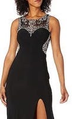

|
Affiliate Disclosure
Amazon: “As an Amazon Associate I earn from qualifying purchases.” Others: “When you buy something we recommend, we may get an affiliate commission — but it never affects your price or what we pick.” |
Choose Your Pressure Cooker
4 Worthy Choices
Introduction
The Pressure Cooker is a revolutionary kitchen tool that will change the way you cook. The pressure cooker is a culinary game changer because of its capacity to cook food faster, retain nutrients, and infuse flavours.
Gone are the days of spending hours in the kitchen waiting for ingredients to tenderise and flavours to develop. The pressure cooker employs steam and high pressure levels to speed up the cooking process, cutting cooking times by up to 70%. Whether you’re making a rich stew, a tender roast, or cooking grains and legumes, the pressure cooker is your ticket to tasty, time-saving meals.
Not only does the pressure cooker speed up cooking, but it also retains the nutritious content of your ingredients. The sealed environment keeps vitamins and minerals from escaping, resulting in better and more nourishing meals. Furthermore, the high pressure helps to break down stubborn fibres, making even the most difficult portions of meat juicy and soft.
The adaptability of the pressure cooker is one of its most appealing characteristics. From soups and stews to rice, beans, and even desserts, this multipurpose gadget can handle a broad variety of recipes with ease. With programmable settings and simple controls, you have complete control over the cooking process and can get flawless results every time.
Recommended products in the above category:
-
Popular Pressure Cooker, 5L, Silver by Prestige
-
Clipso Stainless Steel Dishwasher Safe Pressure Cooker Cookware by T-fal
-
7-in-1 Electric Pressure Cooker, Slow Cooker, Rice Cooker by Instant Pot
-
Foodi 12-in-1 Deluxe XL 8 qt. Pressure Cooker & Air Fryer by Ninja
1. Popular Pressure Cooker, 5L, Silver by Prestige
Prestige Popular is a pressure cooker with great quality and longevity. This cooker, made of the finest virgin aluminum, ensures a safe and long-lasting performance that can handle the demands of regular cooking.
The Prestige Popular pressure cooker’s sturdy structure is one of its most notable qualities. It has stronger lugs and a thick base, which ensures great heat distribution and retention. This not only expedites the cooking process, but also ensures that your food is evenly and fully cooked. With its sturdy construction, you can rely on this stove for many years to come, making it an excellent investment for any kitchen.
The Prestige Popular pressure cooker provides greater user convenience in addition to its durable design. The slimmer handles provide a more comfortable and solid grip, allowing you to easily manage the cooker. The ergonomic handles give a strong hold and avoid unintentional slides when lifting, carrying, or opening the stove.
The Prestige Popular pressure cooker comes in a variety of cooking capacity sizes to meet the needs of different households. Whether you have a small or large family, you can select the best size for your needs. This adaptability allows you to cook meals in a variety of amount sizes, from individual servings to bigger quantities for gatherings or special events.
When it comes to pressure cookers, safety is of the utmost importance, and the Prestige Popular does not disappoint. It has a number of important safety measures that give you peace of mind while cooking. The Gasket Release System (GRS) properly allows excess pressure to escape, avoiding any catastrophes. The Metallic Safety Plug (MSP) helps to keep the pressure inside the cooker within acceptable levels. These elements work together to give you and your family with a safe cooking experience.
The Prestige Popular pressure cooker is well-known not just for its remarkable features, but also for conforming to international standards. It is ISI certified, indicating that it adheres to stringent quality and safety standards. You can be guaranteed that you’re using a product that meets the highest industry standards when you choose the Prestige Popular pressure cooker.
Finally, the Prestige Popular pressure cooker combines high quality, an easy-to-use design, and enhanced safety measures to deliver a dependable and efficient cooking experience. It is a reliable cooking friend because to its solid construction, stylish handles, variety of sizes, and respect to international standards. With the Prestige Popular pressure cooker, you can enjoy the ease and safety of cooking.
2. Clipso Stainless Steel Dishwasher Safe Pressure Cooker Cookware by T-fal
Introducing the 6.3-Quart Pressure Cooker, the perfect companion for preparing healthy and delicious meals in a fraction of the time compared to traditional cooking methods. This pressure cooker is designed to streamline your cooking process and deliver exceptional results, all while saving you valuable time and energy.
Constructed with durable stainless steel, this pressure cooker ensures long-lasting performance and is built to withstand the demands of daily cooking. The sturdy side handles provide a secure grip, allowing you to confidently maneuver the cooker, even when it’s filled with food.
The encapsulated base of the pressure cooker distributes heat evenly, resulting in consistent cooking and deliciously prepared meals. It is compatible with all types of cooktops, including induction, offering versatility in your kitchen. Whether you have a gas, electric, ceramic, or induction cooktop, this pressure cooker is suitable for all.
Safety is paramount when using a pressure cooker, and this model is designed with your well-being in mind. It features a one-hand system for risk-free opening and closing, ensuring that the cooker won’t accidentally open during use. The variable steam-release valve provides added control over the pressure inside the cooker, allowing you to adjust it according to your specific cooking needs.
Cleaning up after cooking is a breeze with this pressure cooker. It is dishwasher-safe, making it convenient to maintain. Simply remove the gasket and pressure valve before placing it in the dishwasher. Additionally, the pressure cooker comes with a steam basket and stand, allowing you to prepare a variety of dishes with ease. Explore new recipes and culinary creations using the included recipe booklet.
To ensure the longevity of your pressure cooker, it’s important to follow the proper cleaning instructions. After each use, wash the pot, basket, and seal with water and mild washing-up liquid. Avoid using bleach or chlorinated products, as they may damage the cooker’s components.
In summary, the 6.3-Quart Pressure Cooker offers a convenient and efficient way to cook healthy meals in less time. With its durable stainless steel construction, even heat distribution, advanced safety features, and dishwasher-safe design, this pressure cooker is a reliable addition to any kitchen. Prepare flavorful dishes with ease and enjoy the benefits of efficient and flavorful cooking.
3. 7-in-1 Electric Pressure Cooker, Slow Cooker, Rice Cooker by Instant Pot
Here is the 7-in-1 Multi-Functional Pressure Cooker, a versatile and convenient kitchen appliance that offers an array of cooking options to simplify your meal preparation. With its innovative features and smart programs, this pressure cooker takes your culinary skills to new heights.
With its 7-in-1 functionality, this pressure cooker serves as a pressure cooker, slow cooker, rice cooker, yogurt maker, steamer, sauté pan, and food warmer. It’s a true all-in-one kitchen companion that caters to your diverse cooking needs.
Enjoy quick and effortless cooking with the quick one-touch cooking feature. The pressure cooker boasts 13 customizable Smart Programs, allowing you to effortlessly cook a variety of dishes such as ribs, soups, beans, rice, poultry, yogurt, desserts, and more. Simply select the desired program, and the pressure cooker will do the rest, ensuring consistent and delicious results every time.

Whether you prefer fast or slow cooking, this pressure cooker has got you covered. Pressure cook your favorite one-pot meals up to 70% faster than traditional cooking methods, saving you time and energy. Alternatively, you can slow cook your cherished traditional recipes, just like your grandma used to make, ensuring the same rich and flavorful results.
Cleaning up after cooking is a breeze with the quick and easy clean-up features of this pressure cooker. The stainless-steel sides are resistant to fingerprints, maintaining a sleek and polished appearance. Additionally, the lid, inner pot, and accessories are dishwasher-safe, allowing for hassle-free cleaning and convenience.
Safety is a top priority when it comes to using a pressure cooker, and this model is equipped with an array of safety features. With over 10 safety features, including overheat protection and a safe-locking lid, you can have peace of mind while cooking. These safety measures ensure that the pressure cooker operates in a secure and controlled manner, prioritizing your safety and preventing accidents.
In summary, the 7-in-1 Multi-Functional Pressure Cooker offers an incredible range of cooking options and features that simplify your cooking experience. With its quick one-touch cooking, customizable Smart Programs, fast and slow cooking capabilities, easy clean-up, and advanced safety features, this pressure cooker is a reliable and versatile addition to your kitchen. Prepare delicious meals with ease, save time, and enjoy the convenience and peace of mind it brings to your culinary adventures.
4. Foodi 12-in-1 Deluxe XL 8 qt. Pressure Cooker & Air Fryer by Ninja
Here is the Ninja Foodi Deluxe XL, the ultimate pressure cooker that goes beyond the ordinary by combining pressure cooking with a crisping feature. With its innovative TenderCrisp technology, this appliance allows you to quickly pressure cook your ingredients to lock in flavors and juices, and then give them a crispy, golden air-fryer finish.
Designed to cater to the needs of the whole family, the Ninja Foodi Deluxe XL features an extra-large capacity 8-quart ceramic-coated pot. This pot is nonstick, PTFE PFOA-free, and easy to hand-wash, ensuring convenient and hassle-free clean-up after every use. Prepare generous portions of your favorite dishes to feed your loved ones without any hassle.
When it comes to air frying, the Ninja Foodi Deluxe XL doesn’t disappoint. It includes a family-sized 5-quart cook & crisp ceramic-coated basket that can hold up to a 7-lb. chicken. This spacious basket is also PTFE PFOA-free, nonstick, and dishwasher safe, making it a breeze to clean. Now you can easily air fry enough food to satisfy your entire family’s cravings.
The Deluxe Reversible Rack adds even more versatility to your cooking endeavors. This rack allows you to steam and broil, and it can TenderCrisp up to 8 chicken breasts at once. You can also use it to add layers of different ingredients for layered 360 cooking, expanding your culinary possibilities.
With its 12-in-1 versatility, the Ninja Foodi Deluxe XL is truly a kitchen powerhouse. It offers 12 programmable cooking functions, including Pressure Cook, Air Fry/Air Crisp, Steam, Slow Cook, Yogurt, Sear/Sauté, Bake, Roast, Broil, Dehydrate, Sous Vide, and Keep Warm. This extensive range of cooking options ensures that you can prepare a wide variety of dishes with precision and ease.
To help you get started on your culinary journey, the Ninja Foodi Deluxe XL comes with an inspiration guide featuring 45 delicious recipes. Discover new flavors and culinary delights as you explore the endless possibilities this appliance has to offer.
In summary, the Ninja Foodi Deluxe XL is the ultimate pressure cooker that also crisps, offering a unique combination of pressure cooking and air frying capabilities. With its TenderCrisp technology, extra-large capacity pot, XL air frying capacity, deluxe reversible rack, 12-in-1 versatility, and recipe inspiration guide, this appliance empowers you to create mouthwatering meals for your entire family. Elevate your cooking experience with the Ninja Foodi Deluxe XL and enjoy the convenience, versatility, and delicious results it brings to your kitchen.
Conclusion
Modern pressure cookers place a premium on safety. Pressure release valves and locking lids, among other advanced safety features, ensure that the cooker functions safely under pressure. With these built-in safety safeguards, you can prepare your favourite recipes with confidence.
The pressure cooker not only saves time and effort, but it also contributes to a more environmentally friendly kitchen. Its efficient cooking process uses less energy and water than traditional cooking methods, giving it an eco-friendly option for the environmentally conscious home cook.
The pressure cooker is a must-have kitchen gadget for anyone who is a busy professional, a home cook looking for efficiency, or someone who wants to explore new culinary vistas. It streamlines cooking, improves flavours, and produces delectable results in record speed. Prepare to explore a world of culinary possibilities with the pressure cooker at your disposal.
Unprecedented Electronics Advancements and Their Impact on Revolutionizing the 21st Century: Modern Day Electronics

The electronics of the 21st century have been characterized by unprecedented advancements in terms of both hardware and software. The miniaturization of electronic components has paved the way for the...
Exclusivity and Elegance: Unveiling the Allure of Luxury Clothing Lines

Luxury clothing lines are a niche market within the fashion industry that caters to affluent customers who are willing to pay a premium for high-quality, exclusive garments.
Travel Companions: You are in good company

Travel Pillow: A good travel pillow can make a long flight or car ride much more comfortable. Look for one that is soft and supportive, and can be easily compressed for storage.
Fingerboard Guitar: A Hobbyists Musical Instrument

A fingerboard guitar, also known as a fretboard guitar, is a type of miniature guitar that is played using your fingers on a small fretboard.
Unveiling Beauty: The Ever-Evolving World of the Beauty Industry

The beauty industry is a captivating and ever-evolving sector that caters to a vast array of products and services aimed at enhancing our physical appearance, nurturing self-care, and expressing indiv...